Who is Jon Herold?
Before we go any further, you need to know who's behind this theory.
Jon Herold has no military service. No emergency management education. No legal training. No government experience. No security clearance. He has never taken a FEMA course on continuity planning. He has never read a Federal Continuity Directive as part of professional training. He has never participated in a COOP exercise. He has never served in or near the National Military Command Center (NMCC). He doesn't know COGCON procedures, the actual readiness levels used in continuity of government operations.
Yet somehow a single Newsweek article about pandemic planning became the foundation for a 25-part series claiming to reveal classified military operations. He charged money for it, built a media platform around it, and even after declaring "devolution phase over" in January 2025, he continues hosting his weekly Devolution Power Hour on Badlands Media. The theory may be dead, but the revenue stream is alive and well.
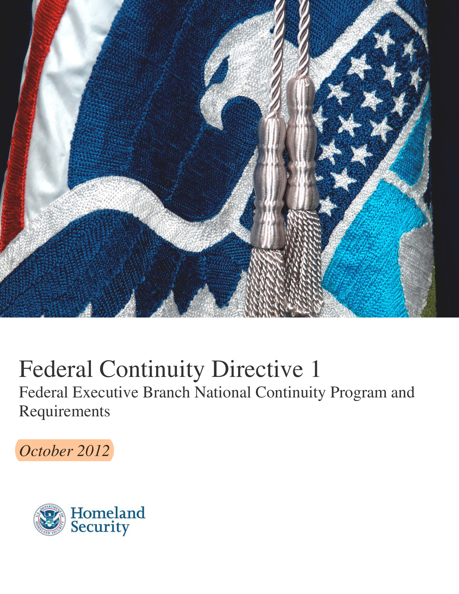
The Reality: He's "just a guy" with zero emergency management training, zero military experience, zero legal education, and zero government service, yet he charges money for a paid Substack subscription while telling 115,000+ followers he's cracked the code on classified government operations. "Just a guy" who blocks anyone with actual credentials who challenges him.How It All Started: One Newsweek Article and a Lot of Imagination
In March 2020, Newsweek published a dramatic headline: "Exclusive: Inside The Military's Top Secret Plans If Coronavirus Cripples the Government." It was actually a legitimate question: what happens if a pandemic takes out enough government officials that the federal government can't function? That is a real concern, and there are real plans for it (we cover them in Chapter 6).
Most normal people read that headline and thought, "huh, interesting" and moved on with their lives. Jon Herold read it and apparently thought, "I bet I can build an entire media empire out of this." And he did. From a single Newsweek article, he spun up a 25-part series, a weekly podcast, a media company, and enough paid subscriptions to buy a house. All without ever taking a single FEMA course, reading a single Federal Continuity Directive in a professional setting, or speaking to anyone who actually works in continuity planning. Well, except for General Flynn, who told him it was nonsense. But who listens to three-star generals when there are Substack subscribers to collect?
Jon Herold, posting under the name "Patel Patriot," took that article and ran with it. By July 2021, he had launched his Devolution series on Substack. It went viral and attracted over 115,000 subscribers. No one was offering counterarguments because no one with actual expertise was paying attention yet.
The Bait and Switch
Here's what Jon did that most people missed: he changed the subject.
The Newsweek article was about pandemic continuity planning, specifically what happens if COVID takes out government leadership. That's a legitimate topic with decades of established frameworks.
But Jon's series didn't stay there. It pivoted to the 2020 election. Suddenly it wasn't about pandemic continuity anymore. It was about Trump secretly using military authority to counter election fraud. The pandemic scenario was just the entry point. The real product was a narrative about a stolen election and a secret military operation.
The PEADs Trick: How He Got Away With It
Here's what made Jon Herold stand out from every other conspiracy theorist: PEADs.
Presidential Emergency Action Documents (PEADs) are pre-drafted executive orders, proclamations, and messages to Congress prepared for potential emergency scenarios. According to the Brennan Center for Justice, the practice originated during the Eisenhower administration as part of nuclear war contingency planning. As of 2017, there were 56 PEADs documented. They've been revised across administrations but remain classified. No PEAD has ever been declassified or leaked publicly, and there is no evidence they have ever been shared with relevant congressional committees.
And that's exactly what Jon exploited.
Most people had never heard of PEADs before Jon's series. They didn't know these were simply pre-drafted emergency action documents, the government's equivalent of having a template ready in case of emergency. PEADs are not secret orders activating military operations. They are not hidden instructions for devolution. They are administrative preparation documents that exist so the President doesn't have to draft an executive order from scratch during a nuclear attack.
But because Jon was the first to bring PEADs into the patriot community conversation, and because nobody understood what they actually were, he got away with it. He became the "PEAD guy." He built his brand on documents no one could read. And he made millions doing it.
Think about that for a moment. A man with no security clearance, no government experience, and no way to access classified documents built an entire career telling people what those classified documents say. It is the equivalent of someone who has never been inside Fort Knox telling you exactly how much gold is in there and charging you $5 a month for the "intel." You cannot verify it. He cannot verify it. Nobody can verify it. That is the point. That is the business model.
Jon claims: Presidential Emergency Action Documents (PEADs) are proof of devolution. They contain secret instructions for military takeover. Because they are classified, nobody can disprove what he says they contain. He built his entire brand on this single claim.
What PEADs actually are: Pre-drafted executive orders, proclamations, and messages to Congress prepared for emergency scenarios. The practice started under Eisenhower for nuclear war contingency planning. As of 2017, there were 56 documented PEADs. They have been revised across administrations but remain classified. No PEAD has ever been declassified or leaked. There is zero evidence they have ever been shared with relevant congressional committees, let alone Substack bloggers. The Brennan Center for Justice and the Congressional Research Service both address PEADs in the context of emergency preparedness. Neither describes a mechanism for secretly transferring power. PEADs are emergency templates. They are the government equivalent of having a form letter ready in case of crisis. Jon turned form letters into a media empire.
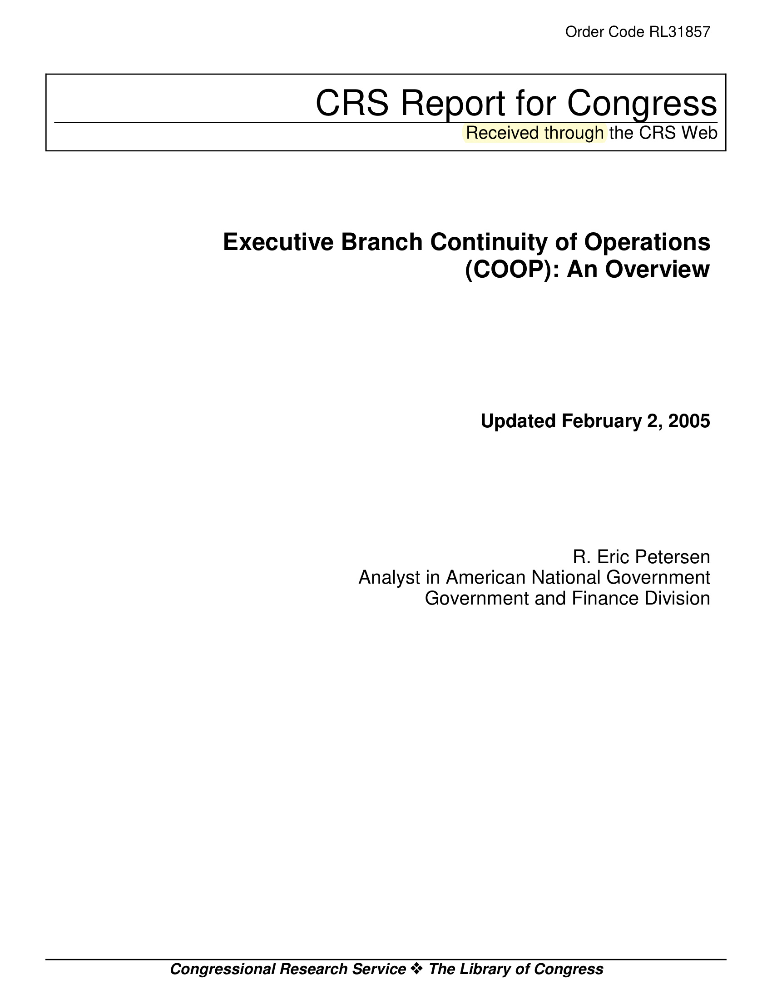
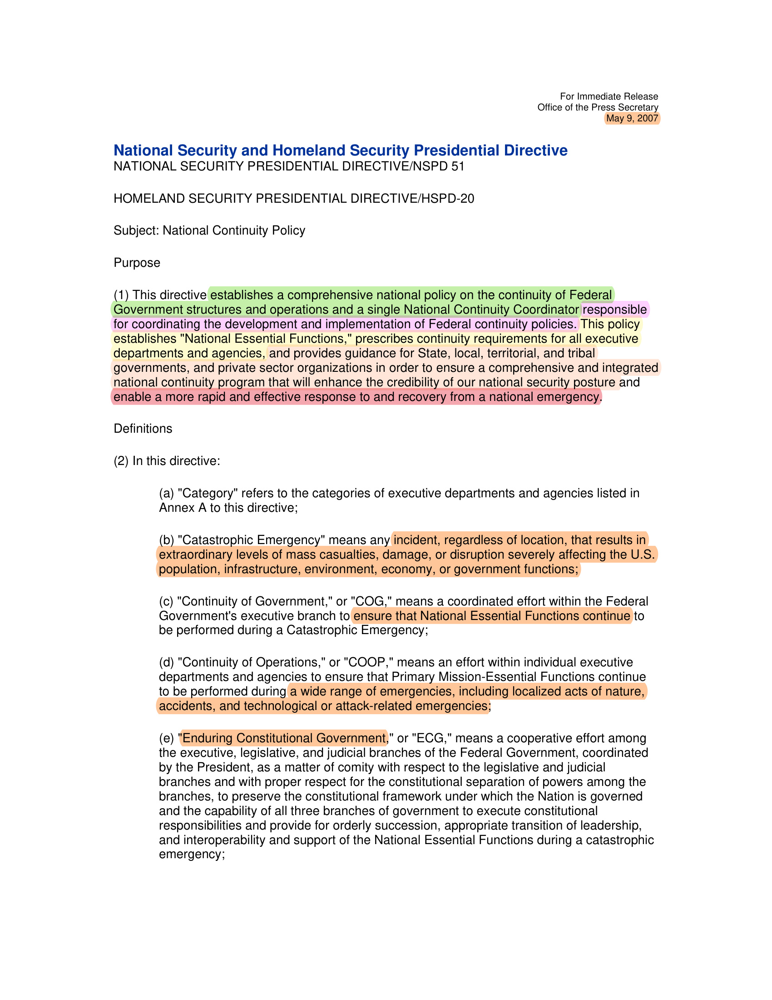
What PEADs actually are: Pre-drafted presidential emergency documents. These are templates for executive orders, proclamations, and messages prepared in advance for crisis scenarios. They've existed since the Eisenhower administration. Every president has them. They are administrative preparation, not secret military instructions. The Brennan Center for Justice has published extensive research on PEADs.His Claims vs. The Actual Documents
This is where the theory falls apart completely. Let's put Jon's claims next to the actual government documents he misinterprets. He says "question everything," so let's take him up on that.
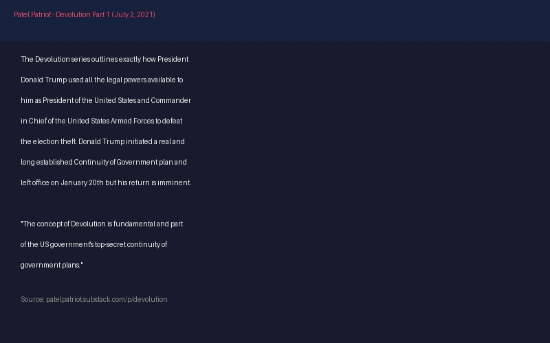
Jon Herold writes: "The one conclusion of mine that hasn't changed and that I have only grown more confident in, is that Donald Trump initiated a continuity of government plan."

The actual FEMA Guide to Continuity of Government is a publicly available document that outlines how COG planning works. It describes an orderly, documented, multi-agency process with specific protocols, training requirements, and oversight. Continuity of Government plans are not "initiated" by a president like a secret weapon. They are standing plans maintained by every administration since Eisenhower. FEMA manages them under PPD-40. They are civilian-led, constitutionally bound, and designed to preserve, not circumvent, the existing government. See Chapter 6 for the actual documents.
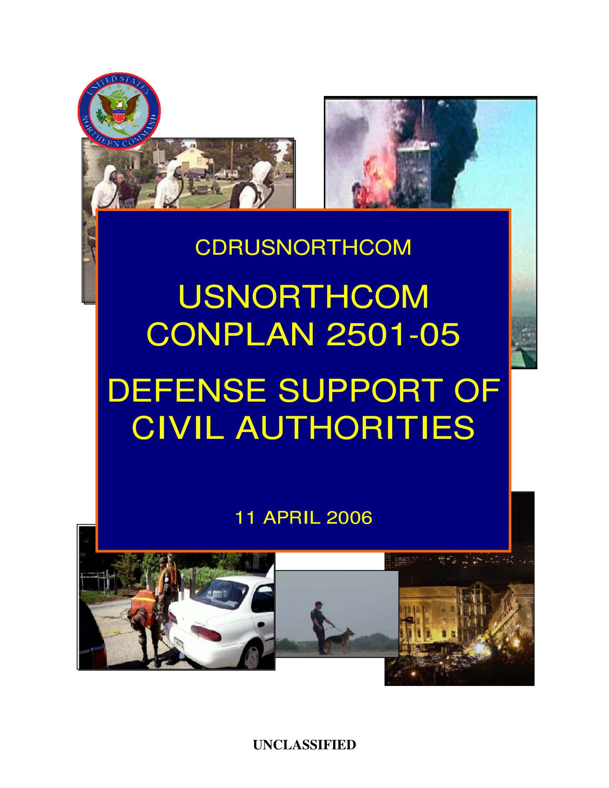
Every single military operation conducted since January 20, 2021 was authorized by Biden as Commander in Chief. Every deployment. Every strike. Every troop movement. The entire Joint Chiefs recognized him on January 12, 2021. Not one general, not one admiral, not one senior NCO has ever produced evidence of a parallel command structure. If the military were secretly operating under Trump, every officer who followed Biden's orders committed treason under the UCMJ. Two million service members. Zero whistleblowers. Zero leaked memos. Zero defections. The "reveal" Jon promised has been "coming" for over four years. Ask yourself honestly: how many more years will you wait?
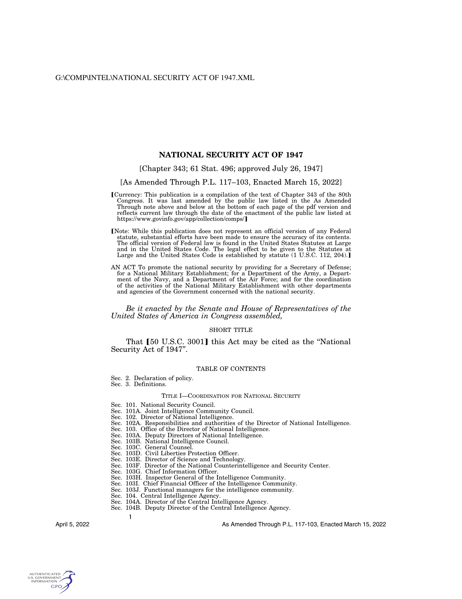
The National Security Act of 1947 defines the structure and authority of U.S. military intelligence. It does not authorize domestic election surveillance. 63 lawsuits were filed challenging the 2020 election. 61 were decided in favor of upholding the results. No court, including those with Trump-appointed judges, found evidence of fraud sufficient to overturn any state's results. The Joint Chiefs recognized Biden. The military participated in Biden's inauguration. If they "captured" the theft, why did they certify the results?
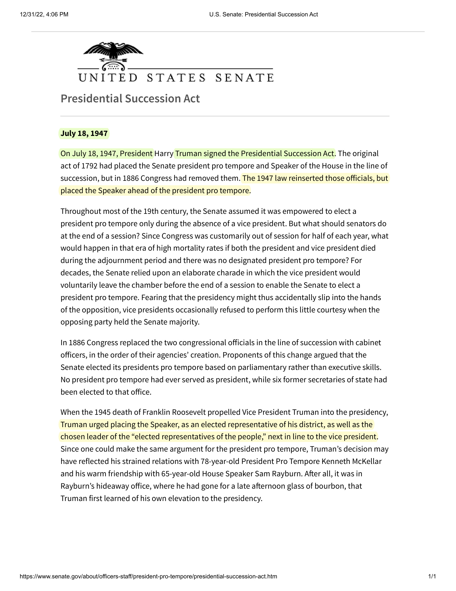
The electoral votes were counted. On live television. Congress certified them. Biden was inaugurated. The military participated in the inauguration ceremony. The Secret Service transferred protection. The nuclear codes were handed over. Every single step of the constitutional transfer of power happened exactly as the Constitution prescribes. Nothing was suspended. If Trump used a PEAD to stop the electoral count, it did not work, which means either the PEAD failed (impossible if the military is secretly in control) or it never happened. Jon picks option three: it happened but you cannot see it yet. That is not analysis. That is a religion.
Jon calls EO 13961 the "Devo EO" and claims it created a "shadow government" through the Federal Mission Resilience Executive Committee. He emphasizes that the EO cites the National Security Act of 1947 (Title 50, War and National Defense) rather than disaster preparedness, claiming this proves it's a war plan.
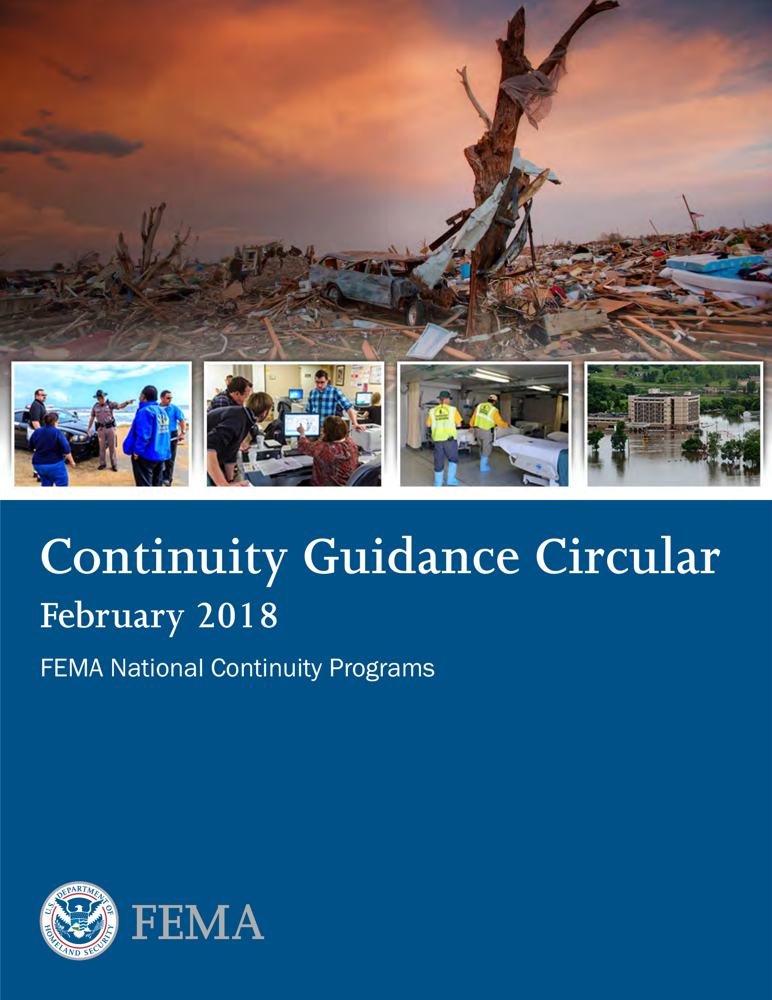
EO 13961 cites the National Security Act of 1947 because continuity of government IS a national security function. It always has been, since the Eisenhower era. The NSA 1947 (PDF) created the National Security Council, the CIA, and unified the military departments. It's an organizational law, not a war authorization. Every continuity directive since Eisenhower cites it because that's the legal framework national security operates under. EO 13961 was an enhancement of emergency management that integrated continuity planning with enterprise risk management. It enabled telework as a continuity function and ultimately led to FCD-0 in 2024 that strengthened the continuity framework. That's not a shadow government. It's better emergency management. And on January 19, 2025, Jon himself admitted it was over.
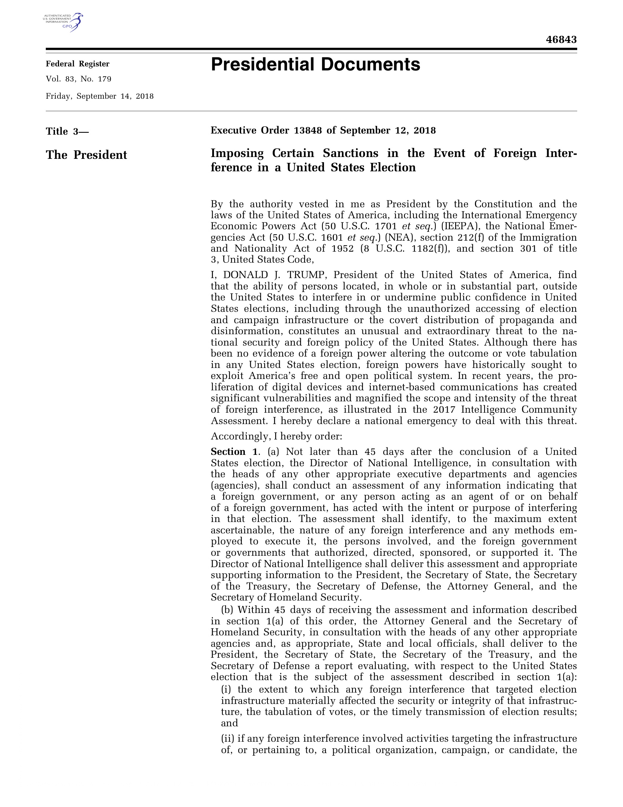
Read the executive order yourself. It is right here (PDF). It literally states "there has been no evidence of a foreign power altering the outcome or vote tabulation." The document Jon cites as proof of election interference explicitly says there was no election interference. The "remedial actions" he gets excited about are sanctions, export restrictions, and asset freezing, the same tools used against Russia and Iran for decades. Not military operations. Not martial law. Sanctions. And Dominion Voting Systems won a $787 million defamation settlement against Fox News for spreading the exact same claims about voting machines that Jon repeats. Fox paid three-quarters of a billion dollars because the claims were false.
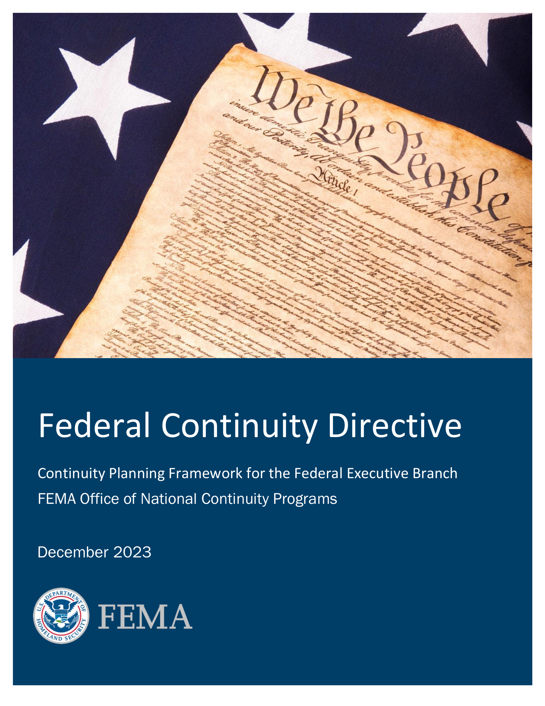
Former government officials starting think tanks is what every administration's people do when they leave office. Obama officials started the Obama Foundation. Bush officials started consulting firms. Clinton officials went to Wall Street. Trump officials started the America First Policy Institute. This is not a shadow government. This is Washington, D.C. People leave government and start organizations. It has happened after every single administration in modern history. Jon saw this completely normal pattern and concluded it was a clandestine military operation. By his logic, every former official who ever started a nonprofit is part of a shadow government. That is not analysis. That is seeing patterns in clouds and charging people $5 a month to hear about them.
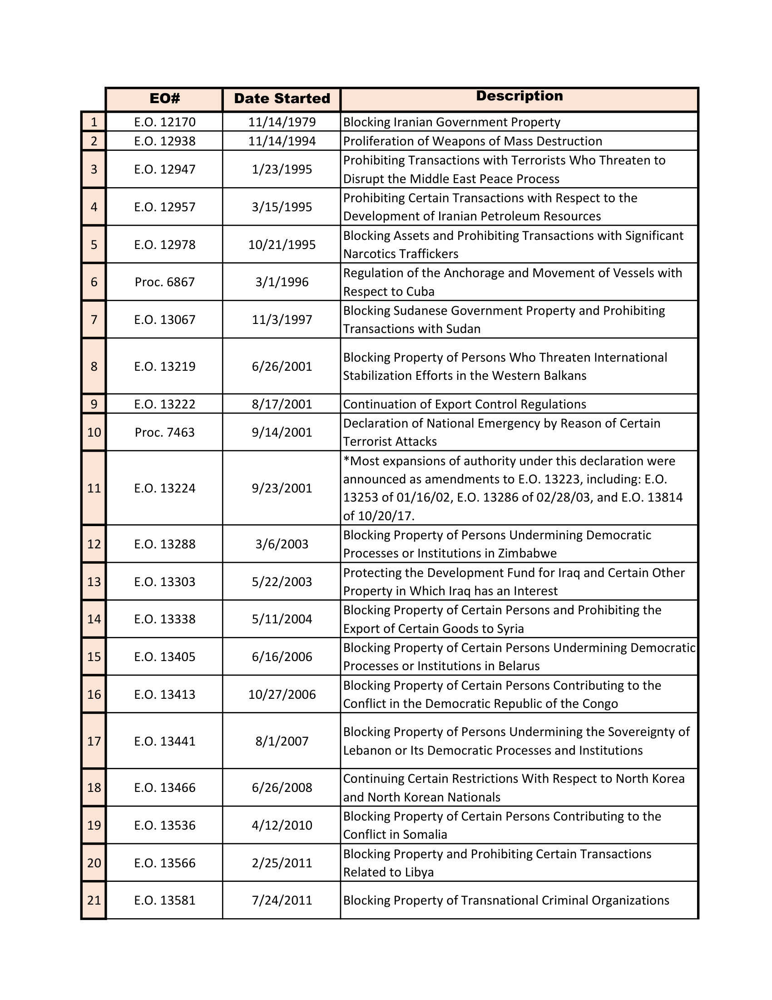
The Facts: The Arizona audit was completed in September 2021. It actually confirmed Biden's win by finding slightly more votes for Biden than originally counted. The dam didn't break. Trump didn't announce anything. And the goalposts moved to the next prediction, which also failed. And the next. And the next.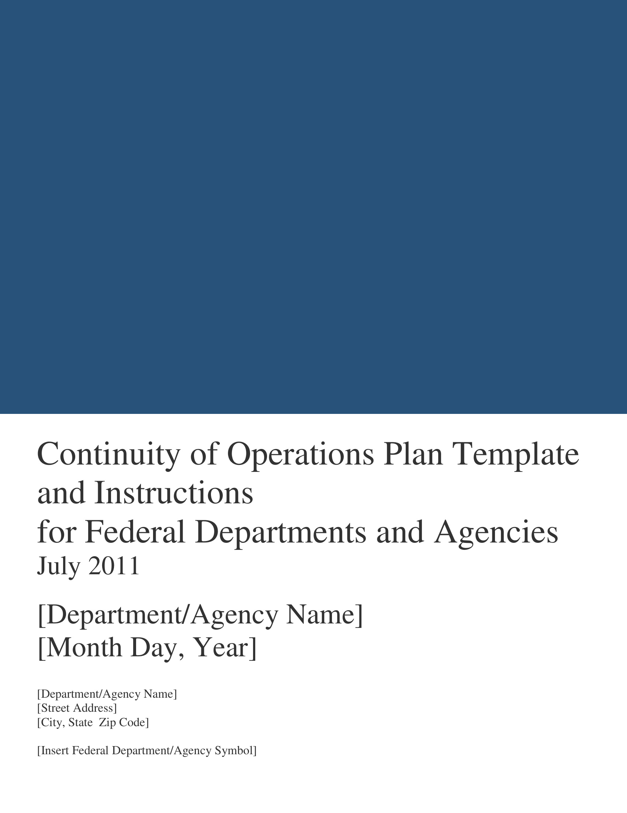
The Facts: Presidents routinely install acting officials after elections. Personnel changes at DoD happen during every transition. The Special Operations reporting change was a policy decision that was publicly announced by DoD. Transition friction happens regularly; the Obama-to-Trump transition had similar issues. Jon interprets routine bureaucratic activity as evidence of a covert operation because he doesn't understand how the Pentagon actually operates. DoD Directive 3020.26 (PDF) describes actual DoD continuity policy.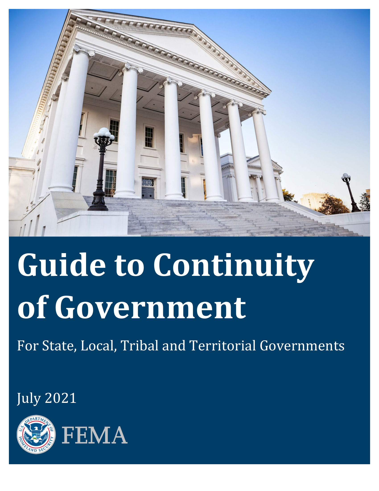
The Facts: Over 1,400 people have been charged in connection with January 6th. The overwhelming majority are documented Trump supporters, not Antifa infiltrators. Federal courts have convicted hundreds. The FBI investigated Antifa involvement and found none. Jon's timeline analysis ignores that thousands of people were already at the Capitol before Trump finished speaking. This claim has been thoroughly debunked by court records, video evidence, and defendant testimony.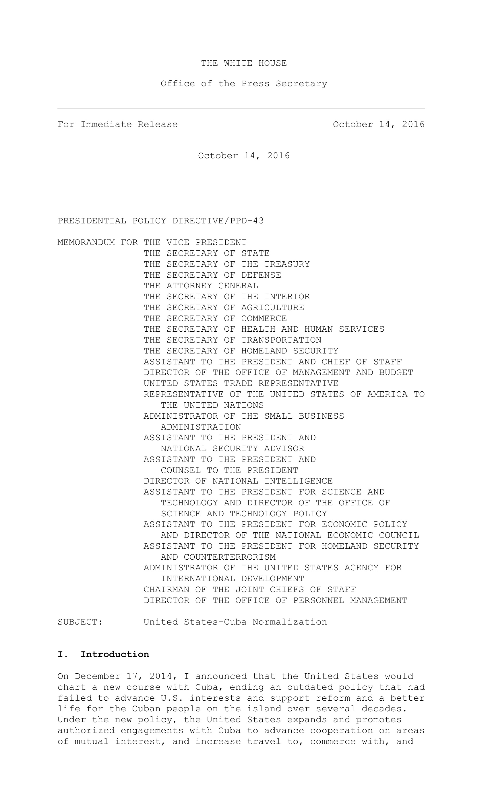
The Facts: Jon literally admits no one knows what's in PEADs, including himself, then builds his entire theory on speculation about their contents. The word "approximately" in a budget document means the exact number was being reviewed, not that Trump added secret war plans. PEADs are routinely reviewed and updated across administrations. The Brennan Center confirms this is standard practice dating to Eisenhower.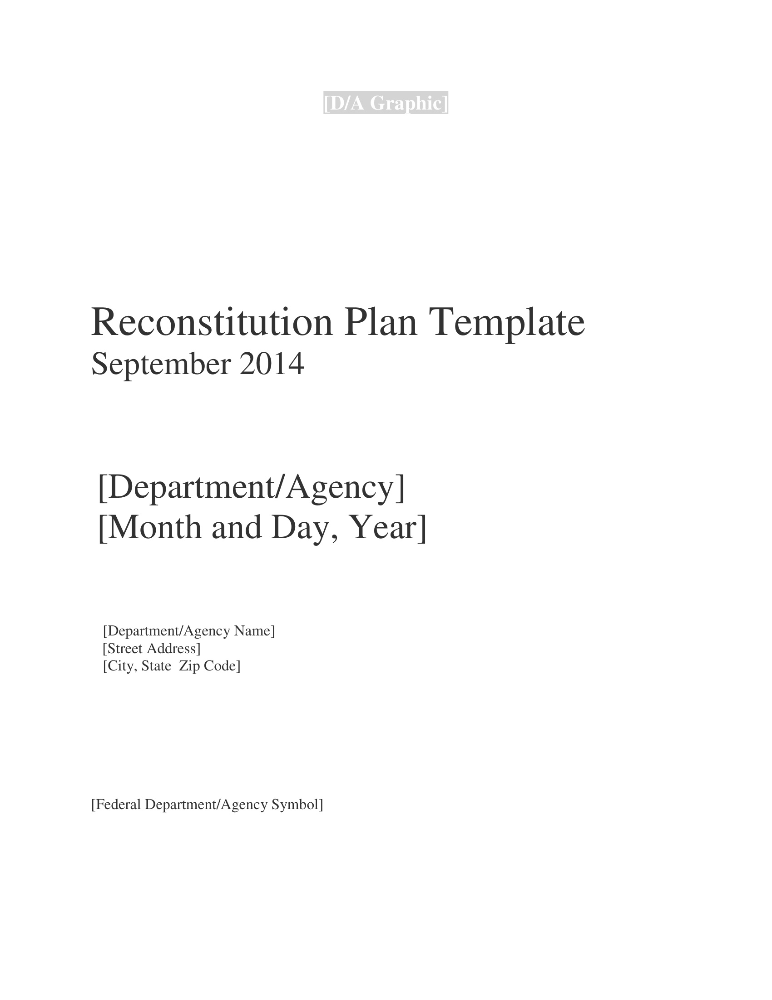
The Facts: If PDJT had information that the Democrats would steal the election with help from China, the ODNI (Office of the Director of National Intelligence) assessed foreign threats to the 2020 election and published their findings. China was identified as seeking to influence, not as having successfully stolen, the election. See Chapter 3 for the actual intelligence assessment.Here's the Irony: Devolution IS Real
Here's what makes this whole thing so frustrating. Devolution is a real thing. It's an actual, documented component of Continuity of Operations (COOP) planning. FEMA defines it. Federal Continuity Directives describe it. Emergency managers study it in graduate school.
Real devolution is the process of transferring essential functions to alternate personnel and facilities during an emergency. It's civilian-led. It's constitutional. It's boring. And it looks nothing like what Jon Herold describes.
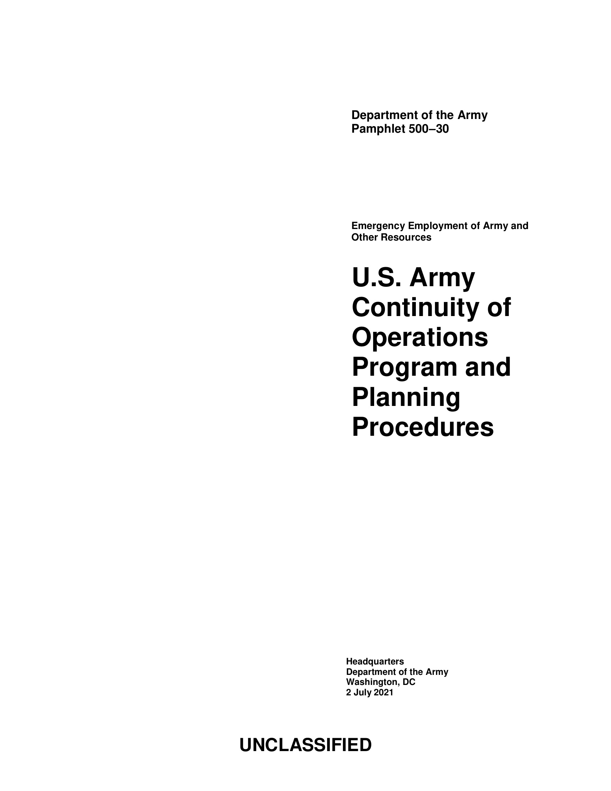
Real Devolution (FEMA): A documented COOP procedure where essential functions are transferred to alternate civilian personnel at alternate facilities during emergencies, with full respect for constitutional processes. See True Devolution and FCD-1 (PDF).Jon took a real term, stripped it of its actual meaning, and repackaged it as a conspiracy theory. That's not research. That's malinformation (real information used out of context to mislead). And the influencers who amplified it knew exactly what they were doing.
Jon Herold wrote 23 installments of his Devolution series and never once properly defined what devolution actually is. In emergency management, devolution has a specific, documented definition. FEMA defines it. FCD-1 describes the process. There are checklists, templates, training courses, and exercises built around it. Any emergency management professional can define it in one sentence. Jon can't. Because what he's describing isn't devolution. It's fanfiction. It's hypothetical sci-fi role-play dressed up with real document numbers to give it the appearance of legitimacy.
The Amplifier Network: Revenue Over Truth
Jon Herold didn't build his following alone. He was amplified by a network of influencers who pushed the devolution narrative to massive audiences. And here's the part they don't want you to think about: the revenue mattered more than the truth.
- We The Media pushed devolution to their large Telegram and social media following, treating it as established fact rather than unverified theory. No fact-checking. No opposing views. Just amplification.
- X22 Report did perhaps the most damage. X22 repeatedly stated that devolution was real, telling listeners to "trust the plan" episode after episode. What X22 never told the audience: devolution is real, just not Jon's version. The real version is a mundane FEMA continuity process, not a secret military operation. X22 either knew this and didn't care, or never bothered to check. Either way, the audience paid the price.
- Badlands Media continues to host Jon's Devolution Power Hour weekly, even after he declared the theory was over in January 2025. The show has pivoted to "narrative warfare" and geopolitics, but the brand name remains because the brand drives subscriptions.
These platforms pushed the theory because it drove clicks, subscribers, and donations. When your business model depends on keeping people engaged with a narrative, accuracy becomes secondary to audience retention. Truth doesn't pay the bills; engagement does. And nothing drives engagement like telling people a secret military operation is about to be revealed.
The Track Record: Zero for Everything
After 25 installments, multiple addendums, and years of "power hour" podcasts, Jon's track record speaks for itself:
The Echo Chamber Problem
One of the most dangerous things about the devolution community isn't the theory itself. It's how the community treats it. On TruthSocial and Telegram, people Re-Truth Jon's posts without verifying a single claim. Anyone who asks questions gets attacked. Anyone who presents counter-evidence gets called a shill or a fed.
That's not how truth works. Real research welcomes scrutiny. If your theory can't survive someone asking "but have you considered..." then it's not a theory. It's a belief system. And belief systems don't need evidence. That should concern you.
He Admitted It Was Over: January 19, 2025
The theory ran unchallenged for years. People mistook silence for validation. Then on January 19, 2025, Jon himself declared the "devolution phase" was over. But by then, the damage was done. Thousands of Americans had spent years waiting for a secret military operation that never existed, while Jon built a media career on their trust.
Yet the Devolution Power Hour continues. The brand continues. The subscriptions continue. The theory may be dead, but the revenue stream is alive and well. That tells you everything you need to know about what this was really about.
The Money: Follow the Revenue
Paid Substack subscriptions: Jon charges for premium content. The theory has been monetized from the start. When you profit from keeping people hooked on a narrative, there's zero incentive to admit you were wrong.
With 115,000+ subscribers, even a small percentage paying for premium content generates significant revenue. Add to that the Devolution Power Hour on Badlands Media, speaking engagements, and merchandise, and the financial incentive to keep the narrative alive becomes clear.
They didn't get swindled because they're stupid. They got swindled because Jon mixed real document citations with fictional interpretations, and no one with actual expertise was there to say "that's not what that document means." Until now.
What an Emergency Manager Actually Sees
As someone with a Master's in Emergency Management, here's what stands out when you read Jon's series with professional eyes:
- He ignores the National Continuity Implementation Plan (NCIP), the actual framework that governs how government continuity works. It's built on NIMS (National Incident Management System) and it's civilian-led. Not military.
- He doesn't mention COOP (Continuity of Operations), the programs that every federal agency maintains for exactly the scenarios he describes. These are well-documented, unclassified programs.
- He treats routine executive orders as secret instructions, orders that simply update existing continuity frameworks that have existed since Eisenhower.
- He proposes military takeover of civilian authority, which violates every principle of emergency management, the Posse Comitatus Act, and the Constitution itself.
The Continuity of Government Commission published two reports, "Preserving Our Institutions" (2003) and "The Continuity of the Presidency," that address exactly the scenarios Jon describes. He either didn't read them, or he chose to ignore them because they contradict his narrative.
Go Deeper
📖Sources
- Continuity of Government Commission, "Preserving Our Institutions" (May 2003)
- Continuity of Government Commission, "The Continuity of the Presidency"
- Newsweek, "Inside The Military's Top Secret Plans If Coronavirus Cripples the Government" (March 2020)
- Patel Patriot Substack (the claims being examined)
- Federal Continuity Directive 1 (PDF)
- Guide to Continuity of Government (PDF)
- Brennan Center for Justice - PEADs Research
- Executive Order 13848 (PDF)
- National Security Act of 1947 (PDF)
- DoD Directive 3020.26 (PDF)